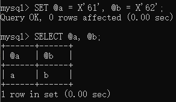
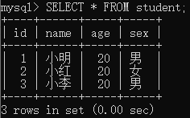
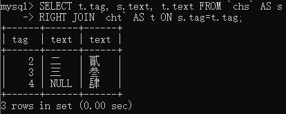

MySQL入门
一、介绍
MySQL是最流行的开源关系数据库管理系统（RDBMS，Relational Database Management System），最初由瑞典的MySQL AB公司开发，后被Sun公司收购，Sun公司又被Oracle公司收购，所以现在MySQL为Oracle旗下的产品，Oracle对其继续开发、发布和提供支持。
其特点有：
- 支持多种操作系统。并且为许多编程语言提供了API，包括C、C++、C#、VB.NET、Delphi、Eiffel、Java、Perl、PHP、Python、Ruby等等。
- 使用高度优化的类库实现SQL函数，该类库应尽可能快。通常在查询初始化之后根本没有内存分配。
- 既能够作为一个单独的应用程序在客户端服务器网络环境中运行，也能够作为一个程序库而嵌入到其他的软件中。
- 提供多语言支持，常见的编码如中文的GB 2312、BIG5，日文的Shift JIS等都可以用作数据表名和数据列名。
- 提供TCP/IP、ODBC和JDBC等多种数据库连接途径。
- 采用具有独立模块的多层服务设计。
- 提供事务性和非事务性存储引擎。
- 使用非常快速的B树磁盘表（MyISAM）和索引压缩。
- 使用非常快速的基于线程的内存分配系统。支持多线程与多用户。
MySQL语句可以分为以下四种：
- 数据定义语言（DDL）：create，drop，alter
- 数据操作语言（DML）：insert，delete，update
- 数据查询语言（DQL）：select
- 数据控制语言（DCL）：grant，revoke。主要是控制用户访问权限
1、关系型数据库与非关系型数据库
关系型数据库即创建在关系模型基础上的数据库，借助于集合代数等数学概念和方法来处理数据库中的数据，现实世界中的各种实体以及实体之间的各种联系均使用关系模型来表示。关系模型由关系数据结构、关系操作集合和关系完整性约束三部分组成。常见的RDBMS有MySQL、Microsoft SQL Server、Oracle、PostgreSQL、SQLite、Apache Derby、HSQLDB、H2等等
标准数据查询语言SQL就是一种基于关系数据库的语言，这种语言执行对关系数据库中数据的检索和操作。
既然有关系型数据库，那就有非关系型数据库（NoSQL，最初表示Non-SQL，后被另解为Not only SQL），这是对不同于传统的RDBMS的统称。具体分类有用于文档存储的MongoDB，用于图形数据的Neo4j、JanusGraph，以键值对方式存储Redis、memcached、LevelDB、BigTable。非关系型数据库可以作为关系型数据库的缓存使用
当代典型的关系数据库在一些数据敏感的应用中表现了糟糕的性能，例如为巨量文档创建索引、高流量网站的网页服务，以及发送流式媒体。关系型数据库的典型实现主要被调整用于执行规模小而读写频繁，或者大批量读而极少写访问的事务。
二、安装与配置
MySQL分为免费的社区版与收费的标准版、企业版。一般情况下使用社区版（Community）即可。
1、下载
这里以MySQL 5.7免安装版（Windows）为例，在版本存档页中选择32位或者64位（对应操作系统）压缩包下载，然后解压到需要的位置。可以查阅官方参考手册中2.3.4 Installing MySQL on Microsoft Windows Using a noinstall ZIP Archive的说明。
2、配置
免安装版解压后还不能直接使用，需要做一些配置
2.1 创建配置文件
在根目录中新建一个my.ini文件，参考配置：
1 | [mysqld] |
basedir和datadir为必选项，其分别指向mysql的根目录和数据文件目录，在Windows中路径分隔符使用斜杠/或者双反斜杠\\
注意此时不要去新建data文件夹
在Windows中，MySQL按下述从上到下指定的顺序读取启动选项文件（先ini再cnf）：
- %WINDIR%\my.ini, %WINDIR%\my.cnf
- C:\my.ini, C:\my.cnf
- BASEDIR\my.ini, BASEDIR\my.cnf
- 通过命令参数–defaults-extra-file指定
- %APPDATA%\MySQL\.mylogin.cnf，登录路径（仅客户端）
2.2 初始化数据目录
在bin目录中以管理员模式打开cmd，使用以下命令进行初始化，默认情况下超级用户名为root，会随机生成一个临时密码，或者使用--initialize-insecure不生成密码
1 | mysqld --initialize |
增加--console选项来查看过程日志，最后一行root@localhost:后即为随机生成的密码
2.3 启动服务器并修改密码
还是在bin目录，执行mysqld --console命令，出现如下字样即为启动成功。
1 | mysqld: ready for connections. |
此时可以打开一个新的控制台窗口用来运行客户端程序进行连接，或者使用start mysqld在新窗口中启动。在部分版本运行mysqld会一直显示控制台窗口，可以使用RunHiddenConsole使mysqld后台运行
如果省略
--console选项，则MySQL服务器会将日志输出到数据目录下带有.err扩展名的文本文件中，可以使用--log-error选项另行指定日志保存路径。
使用mysql -u root -p命令登录mysql客户端，输入生成的密码，显示mysql>与一个闪烁的光标时，便进入了mysql客户端，使用下面这条命令来修改密码（初始化时mysql将随机密码标记为已过期，所以必须修改）。注意单引号以及最后的分号
1 | ALTER USER 'root'@'localhost' IDENTIFIED BY 'new password'; |
显示Query OK, 0 rows affected (0.00 sec)即为修改成功，然后输入exit或者quit或者\q退出（无需分号）
如果使用--initialize-insecure选项进行的初始化，首次登录时使用下面这条命令
1 | mysql -u root --skip-password |
2.4 添加到环境变量（可选）
为了便于在所有路径都能使用mysql，可以在环境变量中添加变量%MYSQL_HOME%，值指向mysql的根目录。然后在PATH变量中添加%MYSQL_HOME%\bin（与其它值之间使用分号分隔）
2.5 配置为服务（可选）
更方便的形式是将mysql安装到Windows服务当作，安装前需要先关闭mysql服务器。安装命令不会启动服务器
1 | mysqld --install |
在命令后可以指定安装服务的名称，默认服务名为MySQL；还可以使用--defaults-file=file_name指定配置文件（的路径）
- 启动服务：
net start MySQL - 停止服务：
net stop MySQL - 卸载服务：
sc delete MySQL或者mysqld --remove
2.6 精简文件（可选）
如上图，考虑压缩率，解压后有1G以上的大小，可以删除其中部分不影响运行的文件来精简大小（不推荐生产环境这样做）
- lib文件夹
- bin目录下的pdb文件（调试用），带有embedded、test字样的文件（嵌入以及测试用）
这里我制作了一个批处理脚本文件便于上述配置命令的使用，下载后放入mysql根目录即可。点击下载：mysql.bat
三、语句结构与语法
1、字面值
字符串、不同进制的数字、布尔值、空值等被称为字面值。其中布尔值使用true和false表示（不区分大小写）
1.1 数字
数字同一般程序语言中的数字表示，额外的，16进制数字可以用X'val'表示（val为16进制数，X区分大小写），此表示法需要注意的是数字位数必须为偶数，可以在前面添加0来避免此问题。同时，使用0xval表示（区分大小写）的值数字位数为奇数时将会被添加额外的前导0。X''表示0
二进制值使用b'01'（不区分大小写）或者0b01（区分大小写）表示
1.2 字符串
字符串使用单引号或双引号括起来，彼此相邻的带引号的字符串将会被串联为单个字符串，与c语言相似，mysql也具有转义字符：
| 转义序列 | 表示含义 |
|---|---|
\0 |
ASCII码0（不是数字0）NUL，表示空字符 |
\' |
单引号 |
\" |
双引号 |
\b |
退格符 |
\n |
换行符 |
\r |
回车符 |
\t |
制表符 |
\Z |
ASCII码26，SUB，表示代替 |
\\ |
反斜杠 |
\% |
百分号符 |
\_ |
下划线 |
2、标识符
MySQL中的数据库，表，列，索引，别名，视图，存储过程等对象的名称被称为标识符。使用规则：
- 标识符可以带引号（特指反引号）或不带引号表示，如果包含特殊字符或为保留字，则在使用时必须使用引号；
- 特别的，因为限定名点号后的字符必须是标识符，所以即使使用保留字也无需带引号（限定名即，
表名.列名或数据库.表名或数据库.表名.列名表示的形式）； - 标识符可以以数字开头，但除非加引号，否则不能仅由数字组成；
- 数据库，表和列的名称不能以空格结尾；
- 标识符的字符最大长度为64，例外的，别名为256，复合语句标签为16
- 在mysql内部，标识符被转换并使用UTF-8编码存储，其具有以下限制：
- 不带引号表示的标识符可以使用的字符范围：ASCII:码的[0-9,a-z,A-Z$_]，Unicode码的U+0080到U+FFFF；
- 带引号表示的标识符可以使用的字符范围：ASCII码的U+0001到U+007F，Unicode码的U+0080到U+FFFF；
- 无法使用ASCII码0，即NUL空字符和补充字符（U+10000即以上）
因为数据库、表与data目录中的文件(夹)相对应，所以mysql中的标识符是否区分大小写取决于文件储存系统类型，在Linux中区分大小写，在Windows中不区分大小写。列、列的别名、索引、存储过程和事件名称在任何平台上都不区分大小写
为了保证一致性、可移植性和易用性，建议始终使用小写字母、反引号表示的标识符
3、关键字与保留字
参考MySQL5.7的关键字与保留字列表。关键字是指在SQL语句中具有特殊含义的单词，其中又分为保留关键字和非保留关键字，保留关键字是mysql从关键字中保留使用的标识符，需要特殊处理才能用作表名和列名等标识符。关键字不区分大小写
允许使用非保留关键字作为标识符而无需引号，如果要使用保留关键字作为标识符，则必须加引号。
4、变量
MySQL中的变量分为局部变量、用户变量和系统变量，其中系统变量又分为全局系统变量和会话系统变量。
直接使用标识符(不以@为前缀)声明的就是局部变量，它是强类型的，并且被限定在被声明并存储的程序块中，局部变量不能在函数或存储过程以外访问。
4.1 用户变量
用户变量是以@为前缀表示变量名，限定于会话中的一种变量（一个客户端中定义的用户变量不能被其他客户端读写）。变量名可以使用字母、数字、.、_或$，如果使用字符串或标识符表示，则可以使用其它字符。变量名对大小写不敏感，最大长度为64个字符。变量值可以为整数、实数、字符串或者NULL。
使用SET语句和=或:=符号来赋值，后者区别在于永远不会被视为比较运算符
变量最开始被赋值的数据类型会被作为变量的类型

如上图所示，使用十六进制或bit值分配给用户变量时将会被视为二进制字符串。要将十六进制或bit值作为数字分配给用户变量，则需要与0进行计算或使用CAST函数（后面介绍）
- 没有初始化的变量，值为NULL
- 在SELECT语句中，每个SELECT表达式仅在发送到客户端后才进行计算
- 用户变量不能在语句中直接用作标识符或作为标识符的一部分
不要在语句中为用户变量分配值后在同一语句的其它部分使用此变量，因为涉及用户变量的表达式的求值顺序是不确定的，所以可能会得到非预期的结果。所以建议只使用
SET语句进行赋值
4.2 系统变量
系统变量分为能影响整个服务器的全局系统变量，也可以是影响当前会话的会话系统变量，或者两者都是。
- 许多系统变量是动态的，即可以在运行时修改，用于操作当前运行的MySQL服务器（要使全局系统变量永久设置，需要在配置文件中进行设置，并重启服务器）
- 会话系统变量值的更改仅在当前会话中有效，对其他会话没有影响。
- 当前会话仅能更改自己的会话系统变量，不能更改其它会话的会话系统变量。
- 如果更改全局系统变量，则会保存该值并用于应用于新会话。更改的值不会影响任何当前客户端会话的值（包括更改此值的会话）
使用如下语法来更改全局系统变量；
1 | SET GLOBAL 全局变量名 = 新值; |
使用如下语法来更改会话系统变量。LOCAL等同于SESSION
1 | SET SESSION 会话变量名 = 新值; |
-
如果SET语句中的任何变量赋值失败，则整个语句都会失败，并且不会更改任何变量。
-
使用
SHOW VARIABLES来显示所有系统变量值。 -
不指定GLOBAL.、SESSION.或者LOCAL时，如果存在则返回SESSION值，否则返回GLOBAL值。
5、注释
MySQL中有三种格式的注释：
- 单行注释使用
#开头 - 以
--开始并结尾的注释，要求在第二个破折号后必须有一个空格或控制字符 - 与c语言相同的，使用
/*开始*/结尾的多行注释
关于第三种注释，有一种变体：
1 | /*! MySQL-specific code */ |
这种注释用来编写MySQL扩展、可移植的代码，其中的代码仅供MySQL使用。还可以在!后添加版本号，仅当MySQL版本大于或等于指定的版本号时，才会执行注释中的语句
四、数据类型
MySQL支持多种数据类型，按大类分有数字类型、日期和时间类型、字符串类型、空间（地理位置）类型。其下又分有各种子类型
MySQL中没有真正的布尔类型，类似C语言，0和空字符串表示false，1和其他表示true
关于空间类型比较复杂，不是很常用，可以参考MySQL手册11.4 Spatial Data Types
1、关于NULL值
在MySQL中，NULL是一个特殊的数据类型，具有以下特征
NULL不代表空字符串，与大多数算术、比较运算符以及函数中的运算结果均为NULLNULL表示false- 在排序中
NULL被视为最小值，在分组中两个NULL值被视为相等的 UNKNOWN为NULL的同义词- 特殊日期0/0/0是NULL
2、数字类型
数字类型有：
- 整数：tinyint、smallint、mediumint、int、bigint。存储长度分别为1、2、3、4、8字节
- 二进制：bit
- 小数
- 浮点数：float、double。存储长度分别为4、8字节
- 定点数：decimal
其中整数和定点数又被称为精准数值类型，浮点数被称为近似数值类型。整数和小数都支持无符号类型，但是后者的无符号类型不会增加其最大范围
可以使用附加参数来指定显示的位数，不影响实际的取值范围。其中整数字段存储超出指定范围的数字时，MySQL会根据允许范围从最接近它的一端截短后再进行存储；小数的附加参数包括总的显示位数和几位小数，小数点后面的位数允许超过指定范围的值，MySQL会自动将它四舍五入为最接近的值。定点数的显示位数不能超过65，小数位数不能超过30
关于越界和溢出的处理参考MySQL手册11.1.7 Out-of-Range and Overflow Handling
3、日期和时间
日期与时间类型包括date、time、datetime、timestamp和year
- date表示日期，格式为
YYYY-MM-DD，3字节长度，范围1000-01-01到9999-12-31 - time表示时间或时间间隔，格式为
hh:mm:ss，3字节长度，范围-838:59:59到838:59:59 - datetime表示日期和时间，格式为
YYYY-MM-DD hh:mm:ss，5字节长度（MySQL 5.6.4以后），范围1000-01-01 00:00:00到9999-12-31 23:59:59 - timestamp表示时间戳，即从UTC时间1970年1月1日0时0分0秒开始经过的秒数。4字节长。范围1970-01-01 00:00:01 UTC到2038-01-19 03:14:07 UTC。不包括第0秒，因为0表示
0000-00-00 00:00:00 - year表示年，格式
YYYY，1字节长，范围1901到2155或者0000
time、datetime和timestamp的存储长度还包括分秒，其根据精度有所不同，最多3字节
4、字符串
字符串类型包括
- 字符串：char、varchar
- 文本：tinytext、text、mediumtext、longtext
最大存储长度分别为255、65535、16777215、4294967295，以及1、2、3、4个字节用于存储长度值 - 二进制数据：tinyblob、blob、mediumblob、longblob
最大存储长度同文本类型 - 枚举：enum
- 集合：set
- JSON
4.1 char、text和blob
char使用固定长度存储，最多255个字符，在存储时比指定长度大的值将被截掉，比指定长度小的值将会用空格填充到末尾，检索时将删除尾部的空格。
varchar即character varying，可变长度字符串，最多存储65535个字符，实际长度是所存储字符串长度，再加上1或2字节（如果指定最大长度<255则为1字节）用于存储字符串长度。
text和blob的区别：
- 两者存储方式不同，text以文本存储，blob以二进制方式存储
- text区分大小写，blob不区分大小写
- text可以指定字符集，blob不用指定字符集
- 两者都不能指定默认值，但是和varchar一样都是可变长度
4.2 枚举
枚举属于字符串对象，其值只允许从表创建时的列中指定的集合中选择一个，类似于单选项。枚举可以使用空值。字段中插入非预定义的值都会使 MySQL插入一个空字符串。如果插入值的大小写与集合中的值的大小写不匹配，MySQL则将插入值的大小写转换为集合中大小写一致的值。一个枚举类型最多可以包含65535个不同的元素（实际小于3000），其中一个元素被保留用作存储错误信息，这个错误值用一个空字符串表示，其索引为0。
枚举的限制：
- 枚举值不能是表达式，即使是值为字符串的表达式
- 不能将用户变量用作枚举值
- 使用数字值作为枚举时，建议使用引号。如果省略引号，该数字将被视为索引
4.3 集合
set集合与枚举相似，但是是从指定的集合中取得0个或多个值。同样的，任何试图在set类型字段中插入非指定的值都会变成空字符串。如果插入一个即含有指定元素又含有非指定元素的值，MySQL将会保留指定元素，除去非指定的元素。set类型最多可以有64个不同的元素，不能存在任何相同的元素。
4.4 JSON
从MySQL 5.7.8开始，MySQL支持原生JSON的数据类型，该类型还支持对JSON中数据的访问。通常情况下，JSON类型的存储范围与longtext/longblob大致相同。JSON类型不能有非空的默认值。与存储为JSON格式的字符串相比，JSON数据类型具有以下优势：
- 自动验证存储在JSON列中的JSON数据。无效数据会产生错误
- 优化的存储格式。存储为JSON数据类型的值被转换为允许对JSON元素进行快速读取访问的内部格式
5、各数据类型的默认值
默认值分为显式默认值与隐式默认值。显式默认值即在定义时指定默认值，除TIMESTAMP和DATETIME外，显式指定的默认值必须为字面值，不能是函数或表达式，BLOB、TEXT、GEOMETRY和JSON不能指定默认值。
没有显式指定默认值时使用隐式默认值，如果该字段可以为NULL，则使用NULL，如果不能为NULL，则
- 对于数字类型，默认值为0（指定了自增的除外）
- 对于除TIMESTAMP以外的日期和时间类型，默认值为该类型对应的“零值”；TIMESTAMP则为当前日期与时间值
- 对于除枚举以外的字符串类型，默认值为空字符串，对于枚举，则为枚举的第一个值
五、运算符
运算符，以及操作符，通常用于表达式，以及常量值、变量值、列名等。
1、比较运算符
| 运算符 | 说明 |
|---|---|
| >、<、>=、<=、 | 大于、小于、大于或等于、小于或等于 |
| <>、!= | 不等于 |
| =、<=> | 等于、空值安全的等于 |
| BETWEEN 值1 AND 值2、NOT BETWEEN 值1 AND 值2 | 值是否在两者之间、值是否不在两者之间。前者闭区间，后者相反 |
| IS、IS NOT、IS NULL、IS NOT NULL | 是否为某个值、是否不为某个值、是否为空、是否非空 |
| LIKE、NOT LIKE | 用于简单的模式匹配 |
- 通常这些操作适用于数字和字符串，字符串会自动转换为数字，数字会根据需要转换为字符串。
- 字符串比较默认不区分大小写，并使用定义的校对集作为排序规则（默认为latin1/ISO-8859-1，兼容ASCII，支持中文）
- 在MySQL中任何与NULL的运算结果都为NULL，但额外的
<=>会考虑空值，即1 <=> NULL的结果为假。没有空值安全的不等于比较运算符，可以使用NOT (1 <=> NULL)的方式
2、逻辑与位运算符
| 运算符 | 说明 |
|---|---|
| AND、&& | 逻辑与 |
| NOT、! | 逻辑非 |
| OR、|| | 逻辑或 |
| XOR | 逻辑异或 |
| & | 按位与 |
| | | 按位或 |
| ^ | 按位异或 |
| ~ | 按位取反 |
| >>、<< | 右移、左移 |
- MySQL中，所有非0，非空值都被视为真，0被视为假
- 与：如果所有操作数均为非零且不为空，则结果为1；如果一个或多个操作数为0，则结果为0，否则为空
- 非：如果操作数为0，则结果为1；如果操作数非零，则结果为0，
NOT NULL结果为NULL - 或：当两个操作数都非空时，且非零时，结果为1，否则为0。对于空值，如果另一个操作数不为零，则结果为1，否则为空。如果两个操作数都为空，则结果为空
- 异或：如果任一操作数为空，则返回空。对于非空操作数，如果两个操作数不同（一真一假）则结果为1，否则为0。a与b的异或在数学上相当于
a AND (NOT b))或者((NOT a) and b) - 位运算的结果都将返回无符号的64位整数，对于移位操作，如果超过64位整数的上限，则结果为0
3、算术与赋值运算符
| 运算符 | 说明 |
|---|---|
| %、MOD | 取模、取余、求余数 |
| +、- | 加和减，也可作为更改数值的符号 |
| *、/ | 乘和除 |
| DIV | 整除 |
| = | 赋值 |
| := | 同上，但永远是赋值运算，不会被解释为比较操作 |
- 对于加减乘法，如果两边均为整数，则以bigint的精度作计算结果
- 进行运算时，如果两边均为整数且其中至少一个是无符号类型，则结果也为无符号整数
- 加减乘除和取余操作对于实数和字符串，结果的精度以其中最大范围的为准
- 除法中，结果的保留小数位数为第一个操作数的小数位数加上系统变量
div_precision_increment的值（默认为4） - 0作为除数会产生NULL值
- =仅在SET语句和UPDATE语句中作为赋值操作，在任何其它地方会被视为比较操作
4、其它运算符
LIKE和NOT LIKE：用于基于模式匹配的字符串比较BINARY：通常用于在字符串比较中，转换为二进制字符串进行比较，即区分大小写REGEXP：用于基于正则表达式的字符串匹配，同义的是RLIKE，相反的有NOT REGEXP、NOT RLIKE
5、运算符优先级
各运算符的优先级如下，上面最高下面最低，对于在表达式中以相同优先级出现的运算符，将按从左到右的顺序，赋值运算则是从右至左。可以使用括号来改变优先级
1 | BINARY |
六、命令行中的操作
除了前面配置过程中使用的命令外，这节介绍MySQL命令行的使用。之后的操作默认已登录MySQL客户端
使用SELECT可以进行查询或者计算，输出以表格形式显示，第一行为表头，之后各行是结果。
- 通常，表头是从数据库表中获取的列名。如上这样使用表达式时则会使用表达式本身作为表头。
- 最后会显示返回了多少行以及查询执行了多长时间，但并不是精确值
- 语句中的所有关键字均不区分大小写，所以
SELECT和select是等效的
大部分语句以分号结尾，所以MySQL能同时接收一条或多条语句的输入，也不限制一行中语句的数量，或者一条语句书写多行。以下是命令行中各提示的含义：
| 提示符 | 含义 |
|---|---|
mysql> |
准备接收新的语句 |
-> |
等待多行语句中下一行的输入 |
'> |
等待下一行输入，以单引号开头的字符串的完成 |
"> |
等待下一行输入，以双引号开头的字符串的完成 |
| ``>` | 等待下一行输入，以反引号开头的标识符的完成 |
/*> |
等待下一行输入，多行注释的完成 |
使用\c取消当前输入，需要注意的是，在上表后四种提示中使用\c时，要先完成之前的引号或注释，否则\c会被视为字符串。
使用\G表示纵向显示输出结果，转义命令均区分大小写。更多命令参考mysql Client Commands
七、操纵数据库
SHOW DATABASES：显示当前用户可查看的所有数据库，注意是复数，初始化时已有以下4个系统数据库。切勿随意编辑系统数据库
- information_schema：主要存储了系统中的一些数据库对象信息，比如用户表信息、列信息、权限信息、字符集信息和分区信息等
- mysql：核心数据库，主要用于存储数据库用户、用户访问权限等控制和管理信息
- performance_schema：主要用于收集数据库服务器性能参数
- sys：MySQL5.7开始，提供了一些数据来自于performation_schema的视图，主要是使开发者和使用者更方便地查看性能问题。
1、创建与使用数据库
使用CREATE DATABASE 数据库名创建数据库，因为创建数据库后不会选择使用该数据库，所以还需要use 数据库名来切换数据库（可不加分号），或者在登录客户端时使用-D 数据库名选项
与Windows系统不同，在Linux系统中，数据库名称是区分大小写的，所以建议SQL关键字使用大写，其它名称使用小写。
如果创建数据库时数据库已存在，则会报错，可以增加IF NOT EXISTS选项，如CREATE DATABASE IF NOT EXISTS my_db;。同时在语句末尾可以增加CHARACTER SET 字符集名称指定字符集，增加COLLATE 校对规则名指定校对规则。使用SHOW CHARACTER SET命令来查看所有可用的字符集，SHOW COLLATION查看所有校对规则。未指定时，系统变量character_set_database和collation_database的值为默认值
字符集定义MySQL存储字符串的方式，校对规则定义比较字符串的方式。
使用SELECT DATABASE()查看当前使用的数据库
2、删除数据库
DROP DATABASE 数据库名用于删除数据库，可以使用IF EXISTS防止数据库不存在时报错，如果删除当前使用的数据库，则会将使用标记取消，即SELECT DATABASE()返回NULL。删除数据库操作是物理删除，即会删除data文件夹中的相应文件
3、修改数据库
ALTER DATABASE 数据库名 选项=值用于修改数据库使用的字符集和校对规则，可以省略数据库名，但必须已通过use 数据库名指定数据库。
MySQL不能直接复制数据库以及更改数据库名
八、操纵表
创建和使用数据库后，使用SHOW TABLES查看库中的表当然此时是没有任何表的
1、创建与查询表
简明语法：
1 | CREATE TABLE [IF NOT EXISTS] 表名 ( |
[]为可选项，|表示多选一；多个定义、表选项之间使用逗号分割，最后一个定义后不加逗号；表选项的中=符号可省略
列定义包括：
ZEROFILL：0填充，此选项会将不足显示位数的部分使用0填充（默认为空格），如果是数字类型，则会自动添加无符号属性NOT NULL或者NULL：不为空或者可为空值，不指定时默认可为空DEFAULT 值：显式指定默认值AUTO_INCREMENT：自增，整数和浮点数可指定，其值从1开始，每次插入的值为表中当前列的最大值+1。每个表只能有一个自增值字段，不能指定默认值INDEX | KEY：普通索引[PRIMARY] KEY：主键，默认不能为空（隐式的），不能有重复值，一张表只能有一个主键，但可以定义多列主键UNIQUE [KEY]：唯一索引，不能有重复值，可以为空，可以定义多个FOREIGN KEY：外键COMMENT：注释，后跟字符串COLLATE：排序规则
除了列以外的创建定义：
FOREIGN KEY：外键（允许跨表交叉引用相关数据）- 索引，后面需用括号指定单列或多列，多列之间使用逗号分割
INDEX | KEY：普通索引PRIMARY KEY：主键索引UNIQUE [INDEX | KEY]：唯一索引FULLTEXT [INDEX | KEY]：全文索引
考虑到与其他数据库系统的兼容性，MySQL将
KEY作为INDEX的同义词，在列定义中主键也可以仅使用KEY指定
常用的表选项：
ENGINE：指定数据库表的存储引擎。未指定时，使用系统变量default_storage_engine的值。可以对不同的表使用不同的存储引擎AUTO_INCREMENT：指定自增初始值[DEFAULT] CHARACTER SET或[DEFAULT] CHARSET：指定默认字符集，未指定时，使用数据库的值[DEFAULT] COLLATE：指定默认校对规则，未指定时，使用数据库的值COMMENT：注释，说明当前表的含义，最多2048个字符
使用DESCRIBE 表名或DESC 表名或SHOW COLUMNS FROM 表名可以查看表的信息
或者SHOW CREATE TABLE 表名查看如何创建表
2、操纵表数据
2.1 插入数据
1 | INSERT [INTO] 表名 [(字段1, 字段2,... 字段n)] {VALUES | VALUE} (值列表) [, (值列表)] |
未指定字段时默认所有字段都需要指定值，且按创建表时声明的顺序；值列表必须与字段数量/类型相匹配；可以使用关键字DEFAULT显式设置为默认值；VALUES等同于VALUE，既不表示字段的数量，也不表示每个字段中值的数量。无论是单条数据还是多条数据，每条数据值的数量是多少，都是一样的；可以插入多条值，每条值列表之间使用逗号分隔；如果字段列表和值列表均为空，则会将每个字段都设置为默认值
2.2 查询数据

1 | SELECT [DISTINCT] 查询表达式 FROM 表名 [查询条件] |
SELECT语句用于查询一个或多个表中选择的行数据，也可用于计算表达式。DISTINCT用于从结果中删除重复的行数据；必须至少有一个查询表达式以及一个或多个表名；查询表达式的规则如下：
- 通常使用列名或者通配符
*表示所有列，也可以使用表名.*的方式 - 可以使用
列名 AS 别名来命名列的显示名称- 不允许在
WHERE中引用列的别名，但可以在GROUP BY，ORDER BY或HAVING中使用 - 在查询表达式中别名既可以使用反引号，也可以单/双引号，而在其它地方则必须使用反引号
- 可以用同样的方式对表使用别名，此时列名的引用方式是
表别名.列名，可用于处理多表联查时不同表中列名相同的情况
- 不允许在
关于查询条件，同时使用时必须严格按照从上到下的顺序给出：
WHERE：需要满足一个或多个条件表达式，可以使用除聚合函数以外的任何函数和运算符。后面可跟LIKE或REGEXP的模式匹配或正则表达式GROUP BY：分组查询处理，通过一定的规则将所有行数据通过一列或多列分组，然后可以对若干个分组进行数据处理HAVING：与WHERE类似，指定条件，通常用于对GROUP BY的分组进行过滤，可以使用聚合函数ORDER BY：用于排序，可以指定列名或列的序号，也可以使用表达式，默认为ASC（升序），降序为DESC（使用在列名后）。字符串排序不区分大小写，可以在列名前增加BINARY关键字强制区分大小写LIMIT：用于分页处理，限制返回结果的行数，也可以指定从哪行开始和指定数量的行（使用逗号或者OFFSET关键字分隔），首行编号为0
MySQL提供了标准SQL的模式匹配，以及基于扩展正则表达式的模式匹配。模式匹配的规则：
- 使用单/双引号将匹配规则括起来，即作为字符串
- 默认不区分大小写比较，如果要强制区分大小写，需要使用
BINARY关键字修饰其中一边字符串- 使用
_匹配任意单个字符- 使用
%匹配任意数量的字符- 此时使用转义符
\_和\%来匹配_和%
除了条件查询，还有比较复杂的子查询，此处不再详解，参考MySQL手册13.2.10 Subqueries
2.3 修改数据
1 | UPDATE 表名 SET 列名=新值 [WHERE 更新条件] [ORDER BY] [LIMIT 行数] |
UPDATE语句可以进行多表修改，此时只能使用WHERE，可以使用DEFAULT关键字指定默认值，如果不使用WHERE指定更新条件，那么将修改所有行的指定值，使用ORDER BY可以在修改前先排序，使用LIMIT只修改指定数量的行。
2.4 删除数据
1 | DELETE FROM 表名 [WHERE 删除条件] [ORDER BY] [LIMIT 行数] |
DELETE语句用于删除表中数据，和更新语句一样，可以进行多表删除，此时只能使用WHERE，不指定WHERE时则删除表的所有数据，也可以使用ORDER BY在删除前排序，使用LIMIT只删除指定数量的行。
1 | TRUNCATE [TABLE] 表名 |
TRUNCATE用于清空表，类似于不带条件的DELETE语句，但其不同之处在于TRUNCATE：
- 直接删除并重建表，相比于
DELETE逐个删除要快得多，特别是对于大型表 - 不会返回删除了多少行。一般为0，表示无信息
- 会初始化任何自增值
- 属于DDL而不是DML
3、修改表
表的修改可以分为修改表的属性和修改表中列的属性
1 | ALTER TABLE 表名 表选项=新值 [, 表选项=新值] |
上述语法允许修改任何在建表时可使用的表选项，如ENGINE、CHARSET、AUTO_INCREMENT、COMMENT等等；修改自增值时，不能将值设置为小于或等于当前使用的值，否则会重置为当前使用的最大值；修改表的存储引擎时需要注意：
- 表会重建
- 尝试更改引擎的结果受所需的存储引擎是否可用以及SQL模式设置的影响
- 为防止意外丢失数据，不能更改为MERGE或BLACKHOLE
3.1 重命名表
1 | RENAME TABLE 旧表名 TO 新表名 [, 旧表名 TO 新表名]; |
RENAME TABLE可以重命名一个或多个表。重命名发生错误时，不会进行任何更改；也可以通过库名.表名和其它库.表名的方式将表移动到其它数据库（实际上修改了数据库）；重命名表后的外键约束名称将会自动更新，如果发生冲突则执行失败；ALTER TABLE也是一样的，RENAME后面可加TO或者AS，或者不加也不影响语义
重命名表其实是对旧表执行ALTER和DROP操作，对新表执行ALTER、CREATE和INSERT操作
表的重命名是原子性的，即表在重命名时被锁定，其它会话或操作无法访问正在重命名的表
3.2 操纵列
3.2.1 追加列
1 | ALTER TABLE 表名 ADD 列名 列定义 [FIRST | AFTER 列名]; |
列定义与创建表时的定义规则相同；可以使用FIRST或AFTER 某列来指定添加到最前面或者某列之后，默认添加到最后；新增的列对于表中已存在的所有行数据将设置为默认值
3.2.2 修改列
1 | ALTER TABLE 表名 CHANGE 旧列名 新列名 列定义 [FIRST | AFTER 列名]; |
CHANGE用于重命名列并更改其定义，MODIFY用于更改列定义，但不能更改列名；列定义必须包括数据类型和所有应用于新列的属性；两者同样可以使用FIRST或AFTER 某列来改变列的位置；原始定义中存在但未在新定义中指定的属性不会继承
3.2.3 删除列
1 | ALTER TABLE 表名 DROP 列名; |
如果表仅存在一列，则不能删除该列，可以直接删除表；DROP PRIMARY KEY可以删除主键
4、删除表
1 | DROP TABLE [IF EXISTS] 表名 |
可以删除一个或多个表；为了避免报错，可以增加IF EXISTS在删除前判断表是否存在；和删除数据库一样，删除表是物理删除，将会删除表结构和表中的所有数据
九、连接查询
MySQL中简单的查询可以使用SELECT 列 FROM 表 WHERE 条件的方式，这是单个表中的操作，对于多表联合查询，需要使用连接查询。
Join连接是一种基于表之间公共列的值在一个或多个表之间连接数据的方法。关于SQL的连接查询，最被广泛引用的是来自C.L. Moffatt的文章Visual Representation of SQL Joins，其中的Venn图以集合形式简单明了的说明了SQL连接查询不同种类的关系
图中中间的叫内连接，左上是左连接，右上是右连接，左下是全（外）连接，这四种为SQL中常见的连接查询，另外三种作为延伸用法在集合中分别是B关于A的补集、A关于B的补集以及互不包含的集合
下面将以以下表和数据演示内连接、左连接和右连接的作用
1 | CREATE TABLE IF NOT EXISTS `chs` ( |
MySQL没有提供全（外）连接的方法，可以使用
UNION子句进行替代
1、内连接
内连接即交集，两者的公共部分。
- 在MySQL中
JOIN，CROSS JOIN（笛卡尔积）和INNER JOIN是在语法上是等价的，而标准SQL中INNER JOIN与ON一起使用，CROSS JOIN则不需要 - 如果仅有内连接，则连接表达式（FROM之后的语句）则可以省略括号
- 为了避免列名相同的问题，通常会对表使用别名，或者使用完全限定名（表名.列名）
- 单个连接中最多引用61个表
ON后面的条件是任何在WHERE子句中可以使用的条件表达式。- 通常情况，
ON子句用于指定如何连接表的条件，而WHERE子句则用于限制结果中应该包括哪些数据
2、左连接
左连接会选取左表的全部数据，而右表无对应数据的行则会使用NULL标记。LEFT JOIN即作为右边的表向左连接，FROM的为左表
3、右连接

和左连接相反，右连接选取右表的全部数据，左表无对应数据的行使用NULL标记。RIGHT JOIN即作为左边的表向右连接，FROM的为右表
为了使代码在数据库间保持可移植性，建议使用左连接而不是右连接
十、数据库(表)存储引擎
存储引擎是处理不同表类型的SQL操作的MySQL组件，目前InnoDB是MySQL默认的也是最通用的存储引擎。
使用SHOW ENGINES查看所有存储引擎及信息
其中Transactions表示是否支持事务，XA表示是否支持分布式事务，Savepoints表示是否支持事务保存点
各存储引擎介绍：
InnoDB：MySQL5.7的默认存储引擎，兼顾了高可靠性和高性能。InnoDB是事务安全（符合ACID）的存储引擎，具有提交、回滚和崩溃恢复的功能以保护数据。InnoDB支持行级锁，提高了多用户并发性的性能。InnoDB将用户数据存储在聚簇索引中，以减少常见的基于主键查询的I/O操作。InnoDB还支持外键引用完整性约束来保证数据完整性。MyISAM：早期MySQL使用较多的存储引擎，存储空间较小，不支持事务，使用表级锁定（限制了读写的性能）。通常用于只读或以读取为主的数据库Memory：内存数据库，将数据存储在内存中，所以断电即失，也被称为堆引擎，因此只能用作临时工作区或从其他表的只读缓存。用于需要快速访问非关键数据的环境CSV：即comma-separated values，将数据存储为以逗号作为分隔符的文本文件中，所以此引擎不会有索引Archive：归档，用于生成专用表，这些表以非常小的占用空间存储大量未编制索引的数据Blackhole：黑洞，顾名思义，接收但不存储数据，任何查询都将返回空Federated：提供链接不同MySQL服务器的能力，从许多物理服务器创建一个逻辑数据库。适合分布式或数据市场环境
关于存储引擎的详细内容参考MySQL手册第15章Alternative Storage Engines